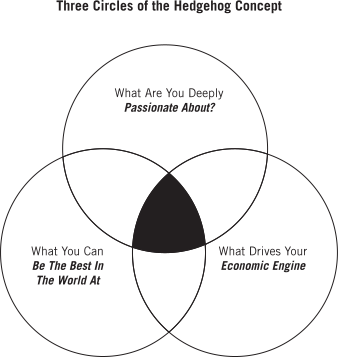

Preserve the Core and Stimulate Progress
From the book Good to Great, the Hedgehog concept is one that flows from deep understanding about the intersection of three circles: 1) what you are deeply passionate about, 2) what you can be the best in the world at, and 3) what best drives your economic or resource engine. Transformations from good to great come about by a series of good decisions made consistently with a Hedgehog Concept, supremely well executed, accumulating one upon another, over a long period of time.
In our pursuit of following Jesus and fostering growth within our church community, we embrace the principle of Upholding the Foundation/Advancing in Faith, inspired by our Vision. A thriving Christian church embodies a delicate balance between preserving our foundational beliefs and a fervent drive for spiritual progress—nurturing change, growth, and a deeper connection with our faith.
Our core Vision, deeply rooted in the teachings of the Bible and the grace of Jesus Christ, serves as the unchanging compass of our church. It guides us in our mission to learn and apply the teachings of the Bible, to grow in truth and grace, and to share the Gospel with everyone, bringing them to Christ. Concurrently, our church community is committed to a perpetual journey of progress, seeking to enhance our understanding and application of the Bible, our growth in Christ, and our outreach to the world. Our goal is to encourage and support the Body of Christ both locally and globally through missionary partnerships.
This drive for progress is deeply ingrained in our Christian faith—a profound desire to explore, create, discover, achieve, change, and improve in alignment with the teachings of Jesus. It's not simply a logical understanding that 'progress is necessary in a changing world' or that 'as a church, we should evolve and better ourselves.' Instead, it's a passionate, inner, almost instinctive urge, driven by our faith in Christ, compelling us to advance in our worship, community service, and spiritual journey together.
Etiam porta sem malesuada magna mollis euismod. Cras mattis consectetur purus sit amet fermentum. Aenean lacinia bibendum nulla sed consectetur.